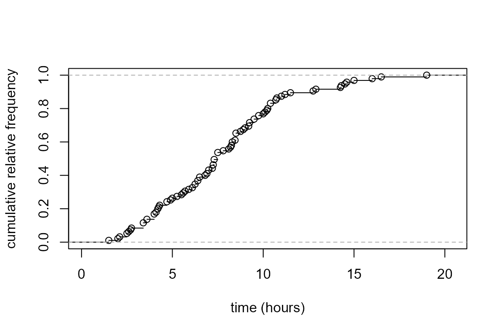
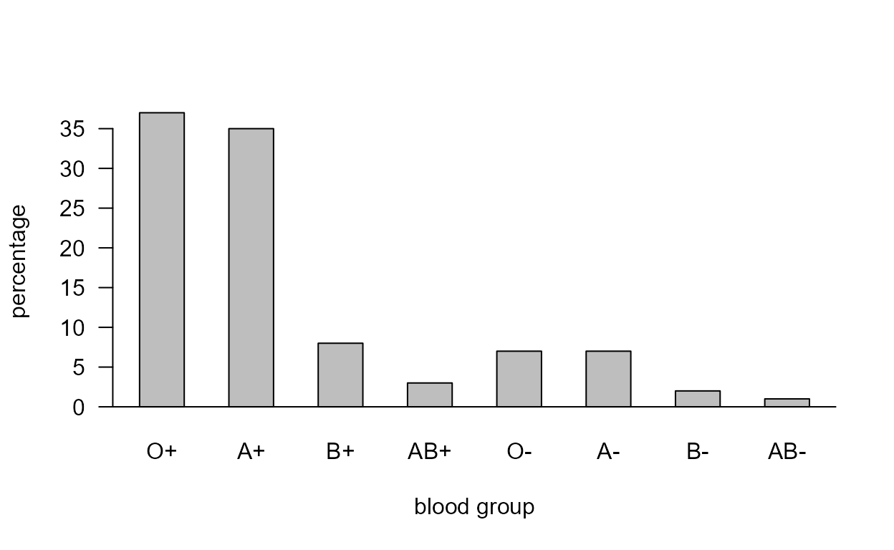

Chapter 2: Graphs (One Variable)
Paul Northrop
Source:vignettes/stat0002-ch2b-graphs-vignette.Rmd
stat0002-ch2b-graphs-vignette.RmdThe main purpose of this vignette is to provide R code to produce graphs that feature in Chapter 2 of the STAT0002 notes. All these graphs involve one variable only. See also the Chapter 2: Graphs (more than one variable).
The Oxford Birth Times data
These data are available in the data frame
ox_births.
> library(stat0002)
> birth_times <- ox_births[, "time"]
> sort(birth_times)
[1] 1.50 2.00 2.10 2.50 2.50 2.60 2.70 2.75 3.40 3.40 3.40 3.60
[13] 3.60 4.00 4.00 4.00 4.10 4.20 4.20 4.25 4.30 4.70 4.70 4.90
[25] 5.00 5.25 5.50 5.60 5.70 5.90 6.10 6.25 6.25 6.40 6.40 6.50
[37] 6.50 6.80 6.90 7.00 7.00 7.20 7.25 7.25 7.30 7.30 7.30 7.50
[49] 7.50 7.50 7.50 7.80 8.10 8.20 8.25 8.30 8.30 8.45 8.50 8.50
[61] 8.50 8.50 8.75 8.90 9.00 9.20 9.25 9.25 9.50 9.50 9.75 9.75
[73] 10.00 10.10 10.20 10.25 10.40 10.40 10.40 10.70 10.70 10.75 11.00 11.20
[85] 11.50 12.75 12.90 14.25 14.30 14.50 14.60 15.00 16.00 16.50 19.00Empirical cumulative distribution function
- Can you work out from the output below what the function
ecdfdoes? Use?ecdfto check our answer.
> ox_ecdf <- ecdf(birth_times)
> ox_ecdf(1)
[1] 0
> ox_ecdf(2)
[1] 0.02105263
> 2/95
[1] 0.02105263
> ox_ecdf(4.7)
[1] 0.2421053
> 23/95
[1] 0.2421053
> ox_ecdf(19)
[1] 1
> ox_ecdf(100)
[1] 1The plot method for an object returned by
ecdf produces a plot much like (the hollow circles in)
Figure 2.3 in the STAT0002 notes.
We will label a lot of axes with “time (hours)”. To make our lives a
little easier we create a character variable called
xlab.
> xlab <- "time (hours)"> plot(ox_ecdf, main = "", xlab = xlab, ylab = "cumulative relative frequency", pch = 1)
Histogram
The following code produces histograms that feature in the STAT0002
notes. Note that in the first plot the probability = TRUE
(or prob = TRUE for short) argument is important: it
ensures that the total area of the rectangles of the histogram is equal
to 1. In the second plot it isn’t necessary to include
prob = TRUE because if the bin widths are unequal then
(sensibly) hist uses prob = TRUE.
> hist(birth_times, prob = TRUE, col = 8, main = "", xlab = xlab)
> br <- c(seq(from = 0, to = 12, by = 2), 20)
> hist(birth_times, breaks = br, col = 8, main = "", xlab = xlab)

- Can you see what the argument
breaksdoes? … and the function andseq?
The hist function returns an object (a list of
several objects in fact) containing the information used to construct
the plot. If we assign this to an R object, ox_tab say,
then we can look at this information and perhaps use it. The
ls function tells us the names of the objects in this list.
Use ?hist to find out what these objects are.
> ox_tab <- hist(birth_times, plot = FALSE)
> ls(ox_tab)
[1] "breaks" "counts" "density" "equidist" "mids" "xname" We use the information in ox_tab to reproduce the plot
in Figure 2.2 of the notes.
> cum_rel_freq <- cumsum(c(0, ox_tab$counts)) / length(birth_times)
> plot(ox_tab$breaks, cum_rel_freq, type = "b", pch = 16, ylab = "cumulative relative frequency", xlab = xlab)
> abline(h = 1, lty = 2)- What do you think the function
cumsumdoes?
The following code produces histogram-like alternative plots. As you
can see we can do many things to change the appearance of plots. Use
?par to see a list of the graphical parameters that we can
use.
> # adjust plot margins, produce a 2 by 2 array of plots (fill row 1 then row 2)
> par(mar = c(4, 4, 1, 1), mfrow = c(2, 2))
> # no vertical axis
> hist(birth_times, col = 8, prob = TRUE, axes = FALSE, xlab = xlab, ylab = "", main = "")
> axis(1, line = 0.5)
> # no vertical axis plus rug of points
> hist(birth_times, col = 8, prob = TRUE, axes = FALSE, xlab = xlab, ylab = "",main = "")
> axis(1, line = 0.5)
> rug(birth_times, line = 0.5, ticksize = 0.05)
> # non-shaded frequency polygon
> n <- length(ox_tab$mids)
> ox_tab$mids <- c(ox_tab$mids[1], ox_tab$mids, ox_tab$mids[n])
> ox_tab$density <- c(0, ox_tab$density, 0)
> plot(ox_tab$mids, ox_tab$density, xlab = xlab, ylab = "density", type = "l", las = 1)
> axis(1, line = 0)
> # shaded frequency polygon with no vertical axis
> plot(ox_tab$mids, ox_tab$density, xlab = xlab, ylab = "", type = "l", bty= "l", axes = FALSE)
> axis(1, line = -0.4)
> polygon(ox_tab$mids, ox_tab$density, col = 8)
Stem-and-leaf plot
> # The default plot
> stem(birth_times)
The decimal point is at the |
0 | 5
2 | 015567844466
4 | 00012233779035679
6 | 1334455890023333355558
8 | 12333555558902335588
10 | 0123444778025
12 | 89
14 | 33560
16 | 05
18 | 0
>
> # The plot that appears in the notes
> stem(birth_times, scale = 2)
The decimal point is at the |
1 | 5
2 | 0155678
3 | 44466
4 | 00012233779
5 | 035679
6 | 133445589
7 | 0023333355558
8 | 123335555589
9 | 02335588
10 | 0123444778
11 | 025
12 | 89
13 |
14 | 3356
15 | 0
16 | 05
17 |
18 |
19 | 0- Use
?stemto see whatscaledoes.
Dotplot
It is surprisingly difficult to produce a nice-looking dotplot using
standard R functions. One possibility is to use stripchart.
The code below also produces the plots Figure 2.5 in the notes.
> stripchart(birth_times, method = "stack", pch = 16, at = 0, offset = 2/3)
> title(xlab = xlab)
> x <- round(birth_times)
> stripchart(x, method = "stack", pch = 16, at = 0, axes = FALSE, offset = 2/3)
> title(xlab = xlab)
> x_labs <- c(min(x), pretty(x), max(x))
> axis(1, at = x_labs)
- Find out what the functions
prettyandaxisdo.
Boxplot
The function that produces a boxplot (or box-and-whisker
plot) is called boxplot. Inside boxplot the
estimation of the quartiles, on which the box part of the plot is based,
uses the default value of the argument type
(i.e. type = 7) in a call to quantile. In
order that we can change the value of type if we wish
stat0002 contains a function box_plot, which
is a copy of boxplot with the extra argument
type added. In box_plot the default is
type = 6, which corresponds to the particular way of
estimating quartiles that is described in the STAT0002 lecture notes and
slides. See the Descriptive
Statistics vignette for more information about quantile
and the argument type. In many cases we will not need to
worry about the choice of the value of type. Unless the
dataset is small the value of type will not have enough of
an effect on the appearance of the boxplot to matter. This is certainly
the case for the birth_times data.
> # type = 6
> b1 <- box_plot(birth_times, horizontal = TRUE, main = "type = 6", xlab = xlab)
> # type = 7
> b2 <- boxplot(birth_times, horizontal = TRUE, main = "type = 7")
We know from the Descriptive
Statistics vignette that only the estimates of the lower quartile
differ between the type = 6 and type = 7
cases. We can check this using the objects b1 and
b2 returned above.
> as.vector(b1$stats)
[1] 1.50 4.90 7.50 9.75 16.50
> as.vector(b2$stats)
[1] 1.50 4.95 7.50 9.75 16.50- Can you work out from the output and graphs above what
boxplotreturns in the list componentstats? Check your answer using?boxplot. How could we obtain the values of any data points that lie outside the whiskers?
If we read the documentation of boxplot carefully (see
?boxplot and ?bxp) we can have a lot of
control over the graph that it produces. The following code produces the
plots in Figure 2.7 of the STAT0002 notes.
> par(mar = c(4, 1, 0.5, 1))
> x_labs <- c(min(birth_times), pretty(birth_times), max(birth_times))
> # top left
> box_plot(birth_times, horizontal = TRUE, col = 8, xlab = xlab, pch = 16)
> # top right
> boxplot(birth_times, horizontal = TRUE, col = 8, axes = FALSE, xlab = xlab, pch = 16)
> axis(1, at = x_labs, labels = x_labs)
> # bottom left
> boxplot(birth_times, horizontal = TRUE, axes = FALSE, xlab = xlab, pch = 16, lty = 1, range = 0, staplewex = 0)
> axis(1, at = x_labs, labels = x_labs)
> # bottom right
> boxplot(birth_times, horizontal = TRUE, axes = FALSE, xlab = xlab, pch = 16, lty = 1, range = 0, boxcol = "white", staplewex = 0, medlty = "blank", medpch = 16)
> axis(1, at = x_labs, labels = x_labs)

In the Chapter 2: Graphs
(more than one variable) vignette we consider both variables in the
ox_births data frame, i.e. the numeric continuous variable
time and the categorical variable day,
producing separate boxplots of time for each day of the
week.
The Challenger O-ring data
We return to the data that feature in the Challenger Space Shuttle
disaster vignette. The column in the data frame contains the
observed numbers of O-rings that suffer thermal distress. This is a
numerical discrete variable. In fact we can be more precise
than this, it is an integer variable. One way to summarize
these data graphically is using a bar plot. In order to produce the bar
plot we first need to tabulate the data, using the
functiontable to calculate the frequencies of the numbers
of distressed O-rings.
> shuttle$damaged
[1] 0 1 0 0 0 0 0 0 1 1 1 0 0 3 0 0 0 0 0 0 2 0 1 NA
> O_tab <- table(shuttle$damaged)
> O_tab
0 1 2 3
16 5 1 1 This table is OK but it does not include the zero frequencies for the categories 4, 5 and 6.
- Why can we not expect the output from
tablenot include the categories 4, 5 and 6?
A digression: table and classes of R objects
An answer to question 8. is “R can’t possibly know which values the
variable shuttle$damaged could have”. It is obvious to us,
because we know what these data mean and that a space shuttle has 6
O-rings, but R’s table function cannot infer this from the
data alone. In this example it probably doesn’t matter that some of the
zero frequencies are missing. However, consider the following example.
We simulate 10 values from a Poisson distribution with a mean of 5. For
an introduction to simulation see the Stochastic
simulation vignette. These data are not real, but imagine that they
are the respective numbers of earthquakes that occur in a particular
area in the years 2008 to 2017.
> set.seed(47)
> x <- rpois(10, 5)
> table(x)
x
4 5 6 7 8 10
2 3 2 1 1 1 We know that these data non-negative integers. R does not know this and has included columns in the table only for non-zero frequencies, i.e. for the values 4, 5, 6, 7, 8 and 10. At the very least we might want the zero frequencies for the values 0, 1, 2, 3 and 9 to be included, and perhaps also something to indicate that there are no values greater than 10. One possibility is the following. It is not particularly elegant but it is quite effective.
> table(c(x, 0:11)) - 1
0 1 2 3 4 5 6 7 8 9 10 11
0 0 0 0 2 3 2 1 1 0 1 0 - Can you work out what this code does? It might help to look
at
?c.
If we are really fussy then we could change the name of the final heading in the table.
> tab <- table(c(x, 0:11)) - 1
> names(tab)[12] <- ">10"
> tab
0 1 2 3 4 5 6 7 8 9 10 >10
0 0 0 0 2 3 2 1 1 0 1 0 To explore another option we return to the variable
shuttle$damaged. R has a system by which R objects are
categorized into different classes. The effect of a given R
function may depend on the class of the object provided to that
function. The function class can be used to find out what
class an object has.
> class(shuttle$damaged)
[1] "integer"R thinks (correctly) that shuttle$damaged is an integer
variable. Unfortunately, as far as I am aware, there is no mechanism for
us to tell R that this integer variable can take only the values 0, 1,
2, 3, 4, 5, or 6. However, there is a way to do this if we get R to
treat shuttle$damaged as a categorical variable.
Then we can provide to R information about the possible levels
of the categorical variable shuttle$damaged. In R
categorical variables are called factors. We use the function
factor to create a new variable fac_dam that
is (a) a factor, and (b) has levels 0, 1, 2, 3, 4, 5 and 6.
> fac_dam <- factor(shuttle$damaged, levels = 0:6)
> class(fac_dam)
[1] "factor"Now when we use table the output reflects automatically
the possible values of the variable.
> O_tab_fac <- table(fac_dam)
> O_tab_fac
fac_dam
0 1 2 3 4 5 6
16 5 1 1 0 0 0 Bar plot
The following code reproduces the graphs in Figure 2.8 of the notes.
> par(mfrow=c(2,2))
> par(oma=c(0,0,0,0),mar=c(4,4,1,2)+0.1)
> xlab <- "number of damaged O-rings"
> ylab <- "frequency"
> barplot(O_tab, xlab = xlab, ylab = ylab, las = 1)
> barplot(O_tab, space = 1, xlab = xlab, ylab = ylab, las = 1)
> barplot(O_tab, space = 1, xlab = xlab, ylab = ylab, las = 1)
> abline(h=0)
> yy <- as.numeric(O_tab)
> xx <- as.numeric(unlist(dimnames(O_tab),use.names=F))
> plot(xx, yy, pch = c("0","1","2","3"), axes = FALSE, xlab ="", ylab = ylab, ylim = c(0, 16))
> title(xlab="number of damaged o-rings",line=0.25)
> axis(2, lty = 1, at = yy, labels = yy, pos = -0.3, las = 1)
If instead we use the O-tab_fac then the zero
frequencies for values 4, 5 and 6 are included in the plot.
> barplot(O_tab_fac, xlab = xlab, ylab = ylab, las = 1)
Blood groups
The data in Table 2.8 of the notes are available in the data frame
blood_types.
Bar plot
This code produces the bar plot on the left side of Figure 2.9.
> blood_types
ABO Rh percentage
1 O Rh+ 37
2 A Rh+ 35
3 B Rh+ 8
4 AB Rh+ 3
5 O Rh- 7
6 A Rh- 7
7 B Rh- 2
8 AB Rh- 1
> lab <- paste(blood_types$ABO, substr(blood_types$Rh, 3, 3), sep = "")
> barplot(blood_types$percentage, space = 1, xlab = "blood group", ylab = "percentage", las = 1, names.arg = lab)
> abline(h=0)Pie chart
If you have a desperate need to produce a pie chart then you can do this using the following code.
> par(mar = c(1, 1, 0, 1))
> slices <- rep(c("white","grey66","grey33","black"), 2)
> pie(blood_types$percentage, labels = lab, col = slices)
Then read the text in the Note section at
?pie and forget that the function pie
exists.
FTSE100 data
The FTSE 100 share index data described in Section 2.5.6 of the notes
are available in the data frame ftse.
> head(ftse)
date price
1220 1984-04-02 1096.3
1219 1984-04-09 1129.1
1218 1984-04-16 1116.2
1217 1984-04-23 1130.9
1216 1984-04-30 1134.7
1215 1984-05-08 1076.1
> tail(ftse)
date price
6 2007-07-09 6716.7
5 2007-07-16 6585.2
4 2007-07-23 6215.2
3 2007-07-30 6224.3
2 2007-08-06 6038.3
1 2007-08-13 6143.5Handling dates in R can be tricky. The main issue is to ensure that a
time series, and its dates, are stored correctly. One way to achieve
this is to use the function ts to create a time series
object, specifying the frequency of the data
(frequency = 52 means weekly because there are,
approximately, 52 weeks in a year) and the start data (the 14th week of
1984). This time series object is a the vector of weekly closing prices
and two attributes in which the important extra information
(metadata) of tsp and class is stored. The
attribute tsp contains the start date, end date and
frequency of the observations and the attribute class
indicates that this is a ts (time series) object.
> ftse_ts <- ts(ftse$price, frequency = 52, start = c(1984, 14))
> head(ftse_ts)
[1] 1096.3 1129.1 1116.2 1130.9 1134.7 1076.1
> attributes(ftse_ts)
$tsp
[1] 1984.250 2007.692 52.000
$class
[1] "ts"Time series plot
The following code produces the time series plot on the left side of
Figure 2.10. Here we have used the function as.Date to
ensure that R knows that the data to be plotted on the horizontal axis
of the plot are dates. In a moment we will make use of the time series
object ftse_ts.
> plot(as.Date(ftse$date), ftse$price, type = "l", ylab = "weekly FTSE 100 share index", xlab = "year")
The following code produces the plot on the right side of Figure
2.10. The class of ftse_ts is "ts" so R knows
that when we use plot(ftse_ts) we want a time series plot.
The rest of the code just adjusts the appearance of the plot.
> plot(ftse_ts, ylab = "FTSE 100 (in 1000s)", xlab = "year", las = 1, axes = FALSE)
> q2 <- c(min(ftse_ts), (2:6) * 1000, max(ftse_ts))
> axis(2, at = q2, labels = round(q2 / 1000, 1), las = 1)
> axis(4, at= q2, labels = round(q2 / 1000, 1), las=1)
> axis(1)
> abline(h = par("usr")[3])- Can you work out what each bit of the code does?
Influenza data
The mystery data plotted in Figure 2.11 of the notes are the numbers of people in the UK visiting their doctor with symptoms of influenza (’flu) during four-weekly time periods over the time period 28th January 1967 to 13th November 2004. [I hope that this doesn’t spoil the surprise for you.]
> head(flu)
date visits
1 1967-01-28 91.5
2 1967-02-25 86.8
3 1967-03-25 62.1
4 1967-04-22 63.0
5 1967-05-20 57.7
6 1967-06-17 53.7
> tail(flu)
date visits
489 2004-06-26 4.35
490 2004-07-24 2.76
491 2004-08-21 6.36
492 2004-09-18 9.71
493 2004-10-16 12.28
494 2004-11-13 18.99Time series plot
We create a time series object using ts and produce the
plot in Figure 2.11
> par(mar = c(5, 5, 4, 3) + 0.1, cex.axis = 0.8, cex.lab = 0.75)
> flu_ts <- ts(flu[,2], frequency = 13, start = c(1967, 4))
> plot(flu_ts, ylab="number of 'flu consultations (in 1000s)", xlab = "year", las = 1, axes=FALSE)
> q2 <- c(min(flu_ts),(1:6) * 100, max(flu_ts))
> axis(2, at = q2, labels = round(q2, 1), las = 1)
> axis(4, at = q2, labels = round(q2, 1), las = 1)
> abline(h=0)
> axis(1,pos=-1)